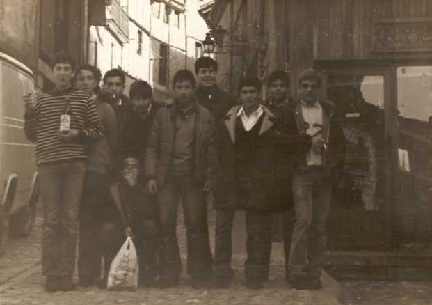
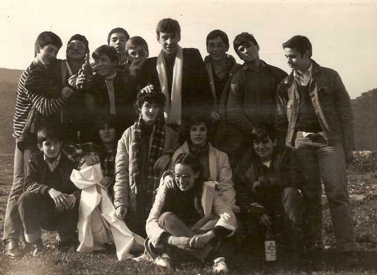

de
Jesús M Martín González
 |
 Año 1982.- Una excursión que realizamos a la localidad burgalesa de FRIAS, donde estamos un grupo, alumnos tanto internos como externos. Pueden ser de interés pues alguno de esa época puede que no la tenga y al verla le haga ilusión conseguirla |